Vision is our most powerful sense. It provides us with an enormous amount of information about the
environment and enables rich, intelligent interaction in dynamic environments. [63] ¶ 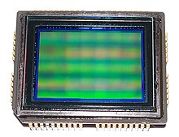

The first step in this process is the creation of sensing devices that capture the same raw information which is the light the human vision system uses. The main topics which will be described are the two (2) current technologies for creating vision sensors:
- 1.
- CCDCharge Coupled DeviceCharge Coupled Device,
- 2.
- CMOSComplimentary MOSComplimentary MOS.
Of course, these sensors have specific limitations in performance compared to the human eye, and it is important to understand these limitations.
Later sections describe vision-based sensors which are commercially available, similar to the sensors discussed previously, along with their disadvantages and most popular applications.
When it comes to the marketplace, CCDCharge Coupled DeviceCharge Coupled Device is the most popular fundamental ingredient for robotic vision systems. [64] Willard Boyle and George E. Smith invented the CCDCharge Coupled DeviceCharge Coupled Device in 1969 at AT&T Bell Labs. Their original idea was to create a memory device. However, with its publication in 1970, other scientists began experimenting with the technology on a range of applications. Astronomers discovered that they could produce high-resolution images of distant objects, because CCDs offered a photo-sensitivity one hundred times greater than film [†-2] , "How a Charge Coupled Device (CCD) Image Sensor Works", journaltitle, booktitle, (2020).. The CCDCharge Coupled DeviceCharge Coupled Device chip, is an array of light-sensitive picture elements, or pixels, usually with between 20000 and 2 million pixels total. Each pixel can be thought of as a light-sensitive, discharging capacitor that is to in size. First, the capacitors of all pixels are fully charged, then the integration period begins. As photons of light strike each pixel, the electrons are liberated, which are captured by electric fields and retained at the pixel. Over time, each pixel accumulates a varying level of charge based on the total number of photons that have struck it. After the integration period is complete, the relative charges of all pixels need to be frozen and read.
In a CCDCharge Coupled DeviceCharge Coupled Device, the reading process is performed at one corner of the CCDCharge Coupled DeviceCharge Coupled Device chip. [65] Because the entire array is read through a single amplifier the output can be highly optimised to give very low noise and extremely high dynamic range. CCDs can have over dynamic range with less than 2e of noise [†-3] , "How a Charge Coupled Device (CCD) Image Sensor Works", journaltitle, booktitle, (2020).. The bottom row of pixel charges are transported to this corner and read, then the rows above shift down and the process repeats. This means that each charge must be transported across the chip, and it is critical the value be preserved.
This requires specialised control circuitry and custom fabrication techniques to ensure the stability of transported charges.
The photo-diodes used in CCDCharge Coupled DeviceCharge Coupled Device chips [66] This also includes CMOSComplimentary MOSComplimentary MOS as well. are NOT equally sensitive to all frequencies of light. They are sensitive to light between 400 and 1000 wavelength. [67] This number range is usually given for easier numbers as both CCDCharge Coupled DeviceCharge Coupled Device and CMOSComplimentary MOSComplimentary MOS have sensitivity values at approximately 350 - 1050 .
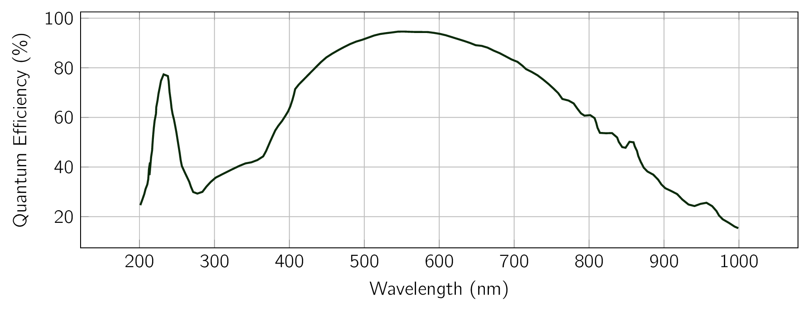
It is important to remember photodiodes are less sensitive to the ultraviolet part of the spectrum and are overly sensitive to the infrared portion (e.g. heat) which we see in Fig. 3.16. You can see that the basic light-measuring process is colourless. [68] It is just measuring the total number of photons that strike each pixel in the integration period regardless whether the light hitting it is blue, red or green.
There are two (2) common approaches for creating color images. If the pixels on the CCDCharge Coupled DeviceCharge Coupled Device chip are grouped into 2-by-2 sets of four (4), then red, green and blue dyes can be applied to a colour filter so each individual pixel receives only light of just one color. Normally, two (2) pixels measure green while one pixel each measures red and blue light intensity. Of course, this 1-chip color CCDCharge Coupled DeviceCharge Coupled Device has a geometric resolution disadvantage.
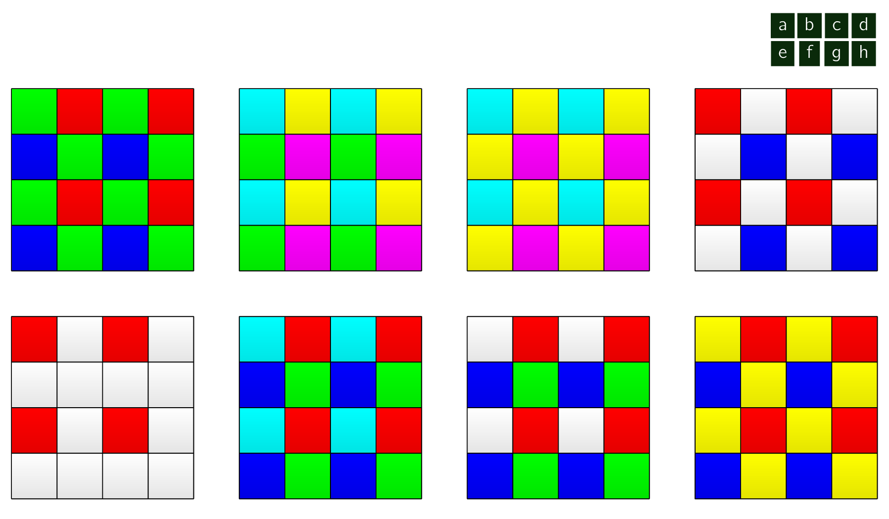
The number of pixels in the system has been effectively cut by a factor of 4, and therefore the image resolution output by the CCDCharge Coupled DeviceCharge Coupled Device camera will be sacrificed.
The 3-chip color camera avoids these problems by splitting the incoming light into three (3) complete [69] Albeit, with lower resolution. copies. Three separate CCDCharge Coupled DeviceCharge Coupled Device chips receive the light, with one red, green or blue filter over each entire chip. Thus, in parallel, each chip measures light intensity for just one color, and the camera must combine the CCDCharge Coupled DeviceCharge Coupled Device chips’ outputs to create a joint color image.
Resolution is preserved in this solution, although the 3-chip color cameras are, as one would expect, significantly more expensive and therefore more rarely used in mobile robotics.
Both 3-chip and single chip color CCDCharge Coupled DeviceCharge Coupled Device cameras suffer from the fact that photo-diodes are much more sensitive to the near-infrared end of the spectrum. This means that the overall system detects blue light much more poorly than red and green. To compensate, the gain must be increased on the blue channel, and this introduces greater absolute noise on blue [70] This is generally defined as the amplifier noise. than on red and green. It is not uncommon to assume at least 1 - 2 bits of additional noise on the blue channel.
The CCDCharge Coupled DeviceCharge Coupled Device camera has several camera parameters which affect its behavior. In some cameras, these parameter values are fixed. In others, the values are constantly changing based on built-in feedback loops. In higher-end cameras, the user can modify the values of these parameters via software embedded into the device. The iris position and shutter speed [71] It’s the speed at which the shutter of the camera closes. A fast shutter speed creates a shorter exposure, the amount of light the camera takes in, and a slow shutter speed gives a longer exposure. regulate the amount of light being measured by the camera. The iris is simply a mechanical aperture that constricts incoming light, just as in standard cameras. Shutter speed regulates the integration period of the chip.
Camera gain controls the overall amplification of the analog signal, prior to A/D conversion. However, it is very important to understand that, even though the image may appear brighter after setting high gain, the shutter speed and iris may not have changed at all. Thus gain merely amplifies the signal, and amplifies along with the signal all of the associated noise and error.
Although useful in applications where imaging is done for human consumption, [72] e.g. photography, television. gain is of little value to a mobile roboticist.
In colour cameras, an additional control exists for white balance. Depending on the source of illumination in a scene [73] For example this could be fluorescent lamps, incandescent lamps, sunlight, underwater filtered light, etc. the relative measurements of red, green and blue light which combine to define pure white light will change dramatically which can be seen in Fig. 3.18 which can also be adjusted with algorithms [†-4] , "Chromatic adaptation and white-balance problem", journaltitle, IEEE International Conference on Image Processing 2005, (2005).. The human eyes compensate for all such effects in ways that are not fully understood, however, the camera can demonstrate glaring inconsistencies in which the same table looks blue in one image, taken during the night, and yellow in another image, taken during the day. White balance controls enable the user to change the relative gain for red, green and blue in order to maintain more consistent color definitions in varying contexts.
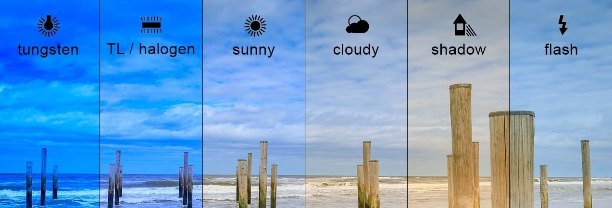
The key disadvantages of CCDCharge Coupled DeviceCharge Coupled Device cameras are primarily in the areas of inconstancy and dynamic range.
- ¶
- Information 3.11: Dynamic Range (in Photography)
-
Dynamic range in photography describes the ratio between the maximum and minimum measurable light intensities (white and black, respectively). In the real world, one never encounters true white or black - only varying degrees of light source intensity and subject reflectivity. Therefore the concept of dynamic range becomes more complicated, and depends on whether you are describing a capture device (such as a camera or scanner), a display device (such as a print or computer display), or the subject itself.
As mentioned above, a number of parameters can change the brightness and colours with which a camera creates its image.
Manipulating these parameters in a way to provide consistency over time and over environments, for example ensuring a green shirt always looks green, and something dark grey is always dark grey, remains an open problem [†-6] , "Ensuring color consistency across multiple cameras", journaltitle, Tenth IEEE International Conference on Computer Vision (ICCV’05) Volume 1, (2005)..
The second type of disadvantages relates to the behavior of a CCDCharge Coupled DeviceCharge
Coupled Device chip in environments with extreme illumination. In cases of very low illumination, each pixel will receive
only a small number of photons. The longest possible shutter speed and camera optics [74]
i.e. pixel size,
chip size, lens focal length and diameter. will determine the minimum level of light for which the signal
is stronger than random error noise. In cases of very high illumination, a pixel fills its well
with free electrons and, as the well reaches its limit, the probability of trapping additional
electrons falls and therefore the linearity between incoming light and electrons in the well
degrades. This is termed saturation [75] ¶ 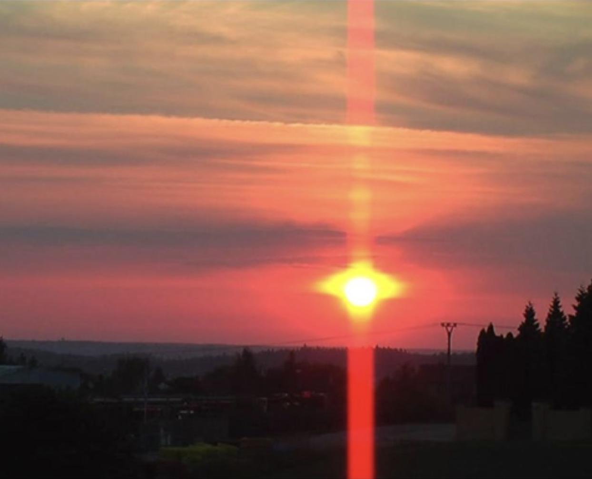
- ¶
- Information 3.12: Quantum Efficiency
-
Quantum efficiency (QE) is the measure of the effectiveness of an imaging device to convert incident photons into electrons. For example, if a sensor had a QE of 100% and was exposed to 100 photons, it would produce 100 electrons of signal.
In practice, sensors are never 100% efficient, and different sensor technologies have different QE values. The highest-end scientific cameras can achieve up to 95% QE but this is dependent on the wavelength of light being detected, as seen in Figure 1.
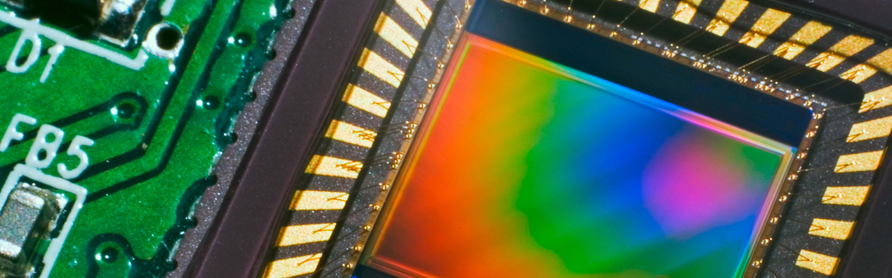
The Complementary Metal Oxide Semiconductor (CMOSComplimentary MOSComplimentary MOS) chip is a significant departure from the CCDCharge Coupled DeviceCharge Coupled Device. Similar to CCDCharge Coupled DeviceCharge Coupled Device, it too has an array of pixels, but located alongside each pixel are several transistors specific to that pixel. Just as in CCDCharge Coupled DeviceCharge Coupled Device chips, all of the pixels accumulate charge during the integration period. During the data collection step, the CMOSComplimentary MOSComplimentary MOS takes a new approach:
Using more traditional traces from general semiconductor chips, the resulting pixel values are all carried to
their destinations. CMOSComplimentary MOSComplimentary MOS has a number of advantages over
CCDCharge Coupled DeviceCharge Coupled Device technologies. First and foremost, there is no need
for the specialized clock drivers and circuitry required in the CCDCharge Coupled DeviceCharge
Coupled Device to transfer each pixel’s clock down all of the array columns and across all of its rows.
[76] ¶ 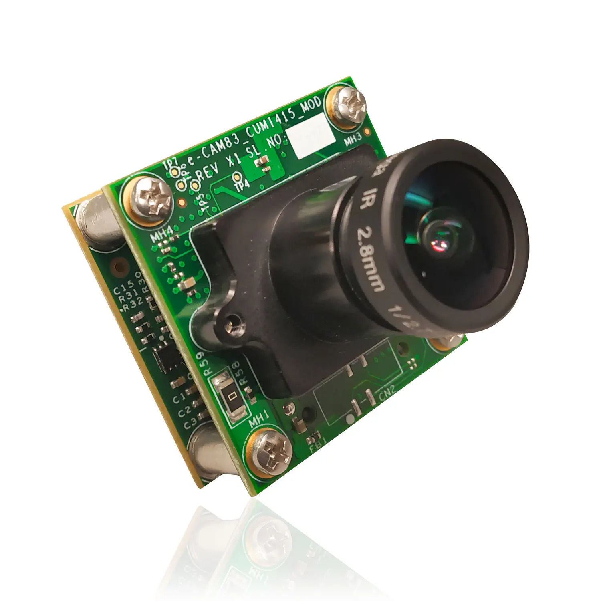
This also means that specialized semiconductor manufacturing processes are NOT required to create CMOSComplimentary MOSComplimentary MOS chips.
Therefore, the same production lines creating microchips can create inexpensive CMOSComplimentary MOSComplimentary MOS chips as well. The CMOSComplimentary MOSComplimentary MOS chip is so much simpler that it consumes significantly less power, it operates with a power consumption a tenth the power consumption of a CCDCharge Coupled DeviceCharge Coupled Device chip [†-11] , "CMOS/CCD Sensors", journaltitle, booktitle, (2007)..
In a AMRAutonomous Mobile RoboticsSelf-navigating machines moving materials and goods independently without fixed tracks or wires. They use smart software, cameras, and sensors to map spaces and safely steer around people or obstacles in real time., power is a scarce resource and therefore this is an important advantage.
On the other hand, the CMOSComplimentary MOSComplimentary MOS chip also faces several disadvantages.
-
Most importantly, the circuitry next to each pixel consumes valuable real estate on the face of the light-detecting array. Many photons hit the transistors rather than the photodiode, making the CMOSComplimentary MOSComplimentary MOS chip significantly less sensitive than an equivalent CCDCharge Coupled DeviceCharge Coupled Device chip.
-
CMOSComplimentary MOSComplimentary MOS, compared to CCDCharge Coupled DeviceCharge Coupled Device is still finding ground in the marketplace, and as a result, the best resolution that one can purchase in CMOSComplimentary MOSComplimentary MOS format continues to be far inferior to the best CCDCharge Coupled DeviceCharge Coupled Device chips available.
-
CMOSComplimentary MOSComplimentary MOS sensors have a lower dynamic range,
-
CMOSComplimentary MOSComplimentary MOS sensors have higher levels of noise.
Compared to the human eye, these chips all have worse performance, cross-sensitivity and a limited dynamic range. As a result, vision sensors today continue to be fragile. Only over time, as the underlying performance of imaging chips improves, will significantly more robust vision-based sensors for AMRAutonomous Mobile RoboticsSelf-navigating machines moving materials and goods independently without fixed tracks or wires. They use smart software, cameras, and sensors to map spaces and safely steer around people or obstacles in real time.s be available.
- ¶
- Information 3.13: Shot Noise
-
Also known as Poisson noise, it is a type [77] ¶
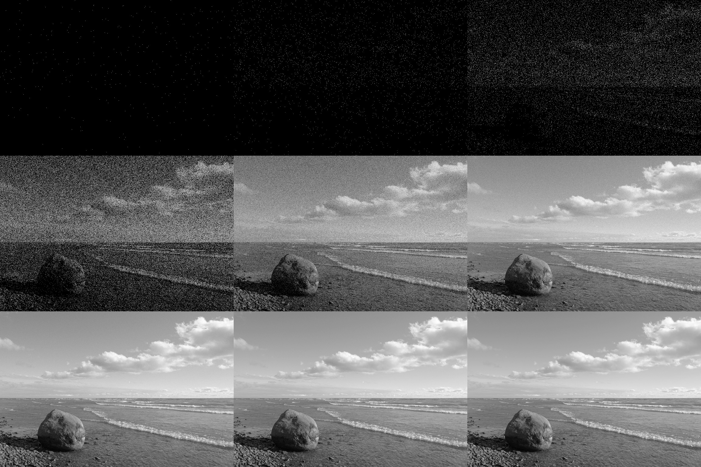
[77]Photon noise simulation. Number of photons per pixel increases from left to right and from upper row to bottom row [†-12] , "A photon noise simulation", journaltitle, booktitle, (2010).. of noise which can be modeled by a Poisson process.In electronics shot noise originates from the discrete nature of electric charge. Shot noise also occurs in photon counting in optical devices, where shot noise is associated with the particle nature of light.

Range sensing is extremely important in AMRAutonomous Mobile RoboticsSelf-navigating machines moving materials and goods independently without fixed tracks or wires. They use smart software, cameras, and sensors to map spaces and safely steer around people or obstacles in real time. as it is a basic input for successful obstacle avoidance. As we have seen earlier, a number of sensors are popular in AMRAutonomous Mobile RoboticsSelf-navigating machines moving materials and goods independently without fixed tracks or wires. They use smart software, cameras, and sensors to map spaces and safely steer around people or obstacles in real time., specifically for their ability to recover depth estimates:
It is natural to attempt to implement ranging functionality using vision chips as well. However, a fundamental problem with visual images makes rangefinding relatively difficult.
Any vision chip collapses the three-dimensional world into a two-dimensional image plane, thereby losing depth information. If one can make strong assumptions regarding the size of objects in the world, or their particular colour and reflectance, then one can directly interpret the appearance of the two-dimensional image to recover depth. But such assumptions are rarely possible in real-world AMRAutonomous Mobile RoboticsSelf-navigating machines moving materials and goods independently without fixed tracks or wires. They use smart software, cameras, and sensors to map spaces and safely steer around people or obstacles in real time. applications.
Without such assumptions, a single picture does NOT provide enough information to recover spatial information.
The general solution is to recover depth by looking at several images of the scene to gain more information, which will be hopefully enough to at least partially recover depth. The images used must be different, so that taken together they provide additional information. They could differ in viewpoint, which would allow the use of stereo or motion algorithms.
An alternative is to create different images, NOT by changing the viewpoint, but by changing the camera geometry, such as the focus position or lens iris.
This is the fundamental idea behind depth from focus and depth from defocus techniques.
We will now look into the general approach to the depth from focus techniques as it presents a straightforward and efficient way to create a vision-based range sensor.
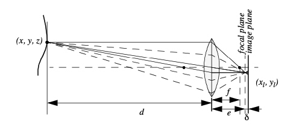
The depth from focus class of techniques relies on the fact that image properties NOT only change as a function of the scene, but also as a function of the camera parameters. The relationship between camera parameters and image properties is depicted in Fig. 3.20. The fundamental equation governing image formation relates the distance of the object from the lens () in Fig. 3.20, to the distance () from the lens to the focal point, based on the focal length () of the lens:
| (3.7) |
If the image plane is located at distance from the lens, then for the specific object voxel [78] A three-dimensional counterpart to a pixel. depicted, all light will be focused at a single point on the image plane and the object voxel will be focused. However, when the image plane is NOT at , as is seen in Fig. 3.20, then the light from the object voxel will be cast on the image plane as a blur circle. To a first approximation, the light is homogeneously distributed throughout this blur circle, and the radius of the circle can be characterized according to the equation:
| (3.8) |
where is the diameter of the lens or aperture and is the displacement of the image plan from the focal point.
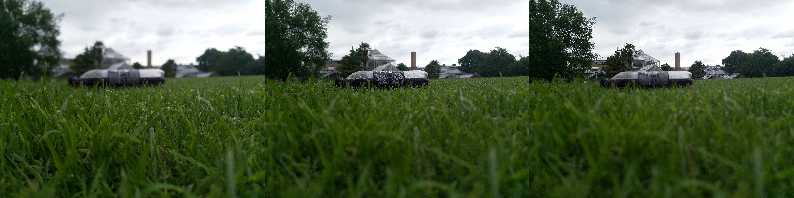
Given these formulae, several basic optical effects are clear.
This is consistent with the fact that decreasing the iris aperture opening causes the depth of field to increase until all objects are in focus. Of course, the disadvantage of doing so is that we are allowing less light to form the image on the image plane and so this is practical only in bright circumstances.
The second property to be deduced from these optics equations relates to the sensitivity of blurring as a function of the distance from the lens to the object.
Increase the object distance to d = 2 and as a result = 0.533. Using Equation (4.20) in each case we can compute R = 0.02 R = 0.08 respectively. This demonstrates high sensitivity for defocusing when the object is close to the lens. In contrast suppose the object is at d = 10. In this case we compute e = 0.526. But if the object is again moved one unit, to d = 11, then we compute e = 0.524. Then resulting blur circles are R = 0.117 and R = 0.129, far less than the quadrupling in R when the obstacle is 1/10 the distance from the lens. This analysis demonstrates the fundamental limitation of depth from focus techniques: they lose sensitivity as objects move further away (given a fixed focal length). Interestingly, this limitation will turn out to apply to virtually all visual ranging techniques, including depth from stereo and depth from motion. Nevertheless, camera optics can be customised for the depth range of the intended application. For example, a "zoom" lens with a very large focal length f will enable range resolution at significant distances, of course at the expense of field of view. Similarly, a large lens diameter, coupled with a very fast shutter speed, will lead to larger, more detectable blur circles. Given the physical effects summarised by the above equations, one can imagine a visual ranging sensor that makes use of multiple images in which camera optics are varied (e.g. image plane displacement ) and the same scene is captured (see Fig. 4.20). In fact this approach is not a new invention. The human visual system uses an abundance of cues and techniques, and one system demonstrated in humans is depth from focus. Humans vary the focal length of their lens continuously at a rate of about 2 Hz. Such approaches, in which the lens optics are actively searched in order to maximise focus, are technically called depth from focus. In contrast, depth from defocus means that depth is recovered using a series of images that have been taken with different camera geometries.
Depth from focus methods are one of the simplest visual ranging techniques. To determine the range to an object, the sensor simply moves the image plane, by focusing, until maximizing the sharpness of the object. When the sharpness is maximised, the corresponding position of the image plane directly reports range. Some autofocus cameras and virtually all autofocus video cameras use this technique. Of course, a method is required for measuring the sharpness of an image or an object within the image. T
he most common techniques are approximate measurements of the sub-image gradient:
| (3.9) |
A significant advantage of the horizontal sum of differences technique given in Eq. (3.9) is that the calculation can be implemented in analog circuitry using just a rectifier, a low-pass filter and a high-pass filter. [80] This is a common approach in commercial cameras and video recorders. Such systems will be sensitive to contrast along one particular axis, although in practical terms this is rarely an issue.
However depth from focus is an active search method and will be slow as it takes time to change the focusing parameters of the camera, using for example a servo-controlled focusing ring.
A variation of the depth from focus technique has been applied to a AMRAutonomous Mobile RoboticsSelf-navigating machines moving materials and goods independently without fixed tracks or wires. They use smart software, cameras, and sensors to map spaces and safely steer around people or obstacles in real time., demonstrating obstacle avoidance in a variety of environments as well as avoidance of concave obstacles such as steps and ledges [†-14] , "Mobile robot obstacle avoidance via depth from focus", Robotics and Autonomous Systems, booktitle, (1997).. This robot uses three (3) monochrome cameras placed as close together as possible with different, fixed lens focus positions. Several times each second, all three frame-synchronised cameras simultaneously capture three images of the same scene. The images are each divided into five columns and three rows, or 15 subregions. The approximate sharpness of each region is computed using a variation of Eq. (3.9) , leading to a total of 45 sharpness values. Note that Equation 22 calculates sharpness along diagonals but skips one row.
This is due to a subtle but important issue. Many cameras produce images in interlaced mode. This means that the odd rows are captured first, then afterwards the even rows are captured. When such a camera is used in dynamic environments, for example on a moving robot, then adjacent rows show the dynamic scene at two different time points, differing by up to 1/30 seconds. The result is an artificial blurring due to motion and not optical defocus.
By comparing only even-number rows we avoid this interlacing side effect.
Recall that the three images are each taken with a camera using a different focus position. Based on the focusing position, we call each image close, medium or far. A 5x3 coarse depth map of the scene is constructed quickly by simply comparing the sharpness values of each three corresponding regions. Thus, the depth map assigns only two bits of depth information to each region using the values close, medium and far. The critical step is to adjust the focus positions of all three cameras so that flat ground in front of the obstacle results in medium readings in one row of the depth map. Then, unexpected readings of either close or far will indicate convex and concave obstacles respectively, enabling basic obstacle avoidance in the vicinity of objects on the ground as well as drop-offs into the ground. Although sufficient for obstacle avoidance, the above depth from focus algorithm presents unsatisfyingly coarse range information. The alternative is depth from defocus, the most desirable of the focus-based vision techniques. Depth from defocus methods take as input two or more images of the same scene, taken with different, known camera geometry. Given the images and the camera geometry settings, the goal is to recover the depth information of the three-dimensional scene represented by the images. We begin by deriving the relationship between the actual scene properties (irradiance and depth), camera geometry settings and the image g that is formed at the image plane. The focused image f(x,y) of a scene is defined as follows. Consider a pinhole aperture (L=0) in lieu of the lens. For every point p at position (x,y) on the image plane, draw a line through the pinhole aperture to the corresponding, visible point P in the actual scene. We define f(x,y) as the irradiance (or light intensity) at p due to the light from P. Intuitively, f(x,y) rep- resents the intensity image of the scene perfectly in focus
The point spread function h(x , y , x , y , R ) is defined as the amount of irradiance g g f f x,y from point P in the scene (corresponding to (x , y ) in the focused image f that contributes ff to point (x , y ) in the observed, defocused image g. Note that the point spread function gg depends not only upon the source, (x , y ), and the target, (x , y ), but also on R, the blur ff gg circle radius. R, in turn, depends upon the distance from point P to the lens, as can be seen by studying Equations (4.19) and (4.20). Given the assumption that the blur circle is homogeneous in intensity, we can define h as follows:
| (3.10) |
Intuitively, point P contributes to the image pixel ( x , y ) only when the blur circle of point gg P contains the point (x , y ). Now we can write the general formula that computes the value gg ofeachpixelintheimage, (x, y),asafunctionofthepointspreadfunctionandthefocused image:
This equation relates the depth of scene points via R to the observed image g. Solving for R would provide us with the depth map. However, this function has another unknown, and that is f, the focused image. Therefore, one image alone is insufficient to solve the depth recovery problem, assuming we do not know how the fully focused image would look. Given two images of the same scene, taken with varying camera geometry, in theory it will be possible to solve for g as well as R because f stays constant. There are a number of algo- rithms for implementing such a solution accurately and quickly. The classical approach is known as inverse filtering because it attempts to directly solve for R, then extract depth in- formation from this solution. One special case of the inverse filtering solution has been demonstrated with a real sensor. Suppose that the incoming light is split and sent to two cameras, one with a large aperture and the other with a pinhole aperture [94]. The pinhole aperture results in a fully focused image, directly providing the value of f. With this ap- proach, there remains a single equation with a single unknown, and so the solution is straightforward. Pentland has demonstrated such a sensor, with several meters of range and better than 97% accuracy. Note, however, that the pinhole aperture necessitates a large amount of incoming light, and that furthermore the actual image intensities must be normal- ized so that the pinhole and large-diameter images have equivalent total radiosity. More re- cent depth from defocus methods use statistical techniques and characterization of the problem as a set of linear equations [93]. These matrix-based methods have recently achieved significant improvements in accuracy over all previous work. In summary, the basic advantage of the depth from defocus method is its extremely fast speed. The equations above do not require search algorithms to find the solution, as would the correlation problem faced by depth from stereo methods. Perhaps more importantly, the depth from defocus methods also need not capture the scene at different perspectives, and are therefore unaffected by occlusions and the disappearance of objects in a second view. As with all visual methods for ranging, accuracy decreases with distance. Indeed, the accu- racy can be extreme; these methods have been used in microscopy to demonstrate ranging at the micrometer level.
Stereo vision is one of several techniques in which we recover depth information from two (2) images depicting the scene from different perspectives.
The theory of depth from stereo has been well understood for years, while the engineering challenge of creating a practical stereo sensor has been formidable [15, 16, 22].
Recent times have seen the first successes on this front, and so after presenting a basic formalism of stereo ranging, we describe the state of the art algorithmic approach and one of the recent, commercially available stereo sensors.
First, we consider a simplified case in which two (2) cameras are placed with their optical axes parallel, at a separation [81] This is also known as the baseline. of b, shown in Figure 4.22.
In this figure, a point on the object is described as being at coordinate with respect to a central origin located between the two (2) camera lenses. The position of this point’s light rays on each camera’s image is depicted in camera-specific local coordinates.
Therefore, the origin for the coordinate frame referenced by points of the form is located at the center of lens .
From the figure 4.22, it can be seen that
| (3.11) |
and (out of the plane of the page)
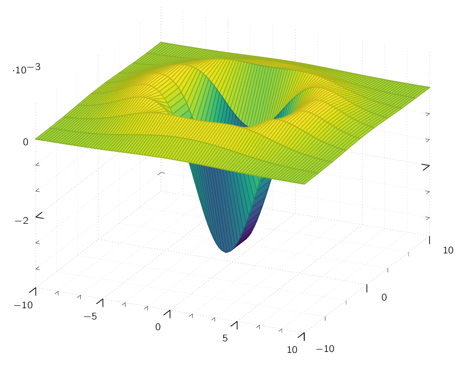
The zero crossings of Laplacian of Gaussian (ZLoG) is a strategy for identifying features in the left and right camera images that are stable and will match well, giving high-quality stereo depth recovery.
This approach has seen tremendous success in the field of stereo vision, having been implemented commercially in both software and hardware with good results. It has led to several commercial stereo vision systems and yet it is extremely simple.
Here we aim to summarize the approach and explain some of its advantages.
The core idea of ZLoG is the Laplacian transformation of an image. Intuitively, this is nothing more than the derivative. Formally, the Laplacian of an image with intensities is defined as:
| (3.12) |
So the Laplacian represents the second derivative of the image, and is computed along both axes. Such a transformation, called a convolution, must be computed over the discrete space of image pixel values, and therefore an approximation of Equation (4.35) is required for ap- plication:
| (3.13) |
We depict a discrete operator , called a kernel, that approximates the second derivative operation along both axes as a 3 x 3 table:
| (3.14) |
Application of the kernel to convolve an image is straightforward. The kernel defines the contribution of each pixel in the image to the corresponding pixel in the target as well as its neighbors.
Now consider the graphical example of a step function, representing a pixel row in which the intensities are dark, then suddenly there is a jump to very bright intensities. The second derivative will have a sharp positive peak followed by a sharp negative peak, as depicted in Figure (4.23).
The Laplacian is used because of this extreme sensitivity to changes in the image. But the second derivative is in fact over-sensitive. We would like the Laplacian to trigger large peaks due to real changes in the scenes intensities, but we would like to keep signal noise from triggering false peaks.
For the purpose of removing noise due to sensor error, the ZLoG algorithm applies Gaussian smoothing first, then executes the Laplacian convolution. Such smoothing can be effected via convolution with a table that approximates Gaussian smoothing:
| (3.15) |
Gaussian smoothing does NOT really remove error, it merely distributes image variations over larger areas. This should seem familiar.
In fact, Gaussian smoothing is almost identical to the blurring caused by defocused optics.
It is, nonetheless, very effective at removing high frequency noise, just as blurring removes fine-grained detail. Note that, like defocusing, this kernel does not change the total illumination but merely redistributes it. [82] This effect is accomplished by the divisor 16.
The result of Laplacian of Gaussian (LoG) image filtering is a target array with sharp positive and negative spikes identifying boundaries of change in the original image.
To solve the correspondence problem, we would like to identify specific features in LoG that are amenable to matching between the left camera and right camera filtered images. A very effective feature has been to identify each zero crossing of the LoG as such a feature.
Many zero crossings do lie at edges in images, but their occurrence is somewhat broader than that. An interesting characteristic of zero crossings is that they are very sharply defined, covering just one “pixel” width in the filtered image. The accuracy can even be further enhanced by using interpolation to establish the position of the zero crossing with sub-pixel accuracy.
All told, the accuracy of the zero crossing features in ZLoG have made them the preferred features in state-of-the-art stereo depth recovery algorithms.
A great deal of information can be recovered by recording time varying images from a fixed [83] or moving. camera.
Firstly we distinguish between the motion field and optical flow:
- Motion field
-
this assigns a velocity vector to every point in an image. If a point in the environment moves with velocity , then this induces a velocity in the image plane. It is possible to determine mathematically the relationship between and .
- Optical Flow
-
:it can also be true that brightness patterns in the image move as the object that causes them moves (light source). Optical flow is the apparent motion of these brightness patterns.
In our analysis here we assume that the optical flow pattern will correspond to the motion field, although this is not always true in practice. This is illustrated in figure 4.26a where a sphere exhibits spatial variation of brightness, or shading, in the image of the sphere since its surface is curved. If the surface moves however, this shading pattern will not move - hence the optical flow is zero everywhere even though the motion field is not zero. In figure 4.26a, the opposite occurs. Here we have a fixed sphere with a moving light source. The shading in the image will change as the source moves. In this case the optical flow is nonzero but the motion field is zero. If the only information accessible to us is the optical flow and we depend on this, we will get false results.
Let E (x, y, t) be the image irradiance at time t at the image point (x, y). If u (x, y) and v (x, y) are the x and y components of the optical flow vector at that point, we need to search a new image for a point where the irradiance will be the same at time t+t, i.e.: at point (x+x, y+y), where x = ut and x = ut. i.e:
| (3.16) |
for a small time interval . From this single constraint u and v cannot be determined unique- ly. We therefore use the fact that the optical flow field should be continuous almost every- where. Hence if brightness varies smoothly with x, y and t we can expand the left hand side
While depth from stereo will definitely prove to be a popular application of vision-based methods to AMRAutonomous Mobile RoboticsSelf-navigating machines moving materials and goods independently without fixed tracks or wires. They use smart software, cameras, and sensors to map spaces and safely steer around people or obstacles in real time., it mimics the functionality of existing sensors, including ultrasonic, laser and optical rangefinders. An important aspect of vision-based sensing is that the vision chip can provide sensing modalities and cues that no other mobile robot sensor provides. One such novel sensing modality is detecting and tracking color in the environment. Color represents an environmental characteristic that is orthogonal to range, and it represents both a natural cue and an artificial cue that can provide new information to an AMRAutonomous Mobile RoboticsSelf-navigating machines moving materials and goods independently without fixed tracks or wires. They use smart software, cameras, and sensors to map spaces and safely steer around people or obstacles in real time.. Color sensing has two important advantages.
- 1.
- First, detection of color is a straightforward function of a single image, therefore no correspondence problem need be solved in such algorithms.
- 2.
- Second, because color sensing provides a new, independent environmental cue, if it is combined [84] i.e. sensor fusion. with existing cues, such as data from stereo vision or laser rangefinding we can expect significant information gains.
-
¶
- AMRAutonomous Mobile Robotics
Self-navigating machines moving materials and goods independently without fixed tracks or wires. They use smart software, cameras, and sensors to map spaces and safely steer around people or obstacles in real time.
-
¶
- CMOSComplimentary MOS
Complimentary MOS
-
¶
- CCDCharge Coupled Device
Charge Coupled Device
- 1.
- , "CCD image sensor SONY ICX493AQA 10,14 (Gross 10,75) M pixels APS-C 1.8" 28.328mm (23.4 x 15.6 mm) from module IS-026 from digital camera SONY DSLR-A200 or DSLR-A300 sensor side", journaltitle, booktitle, (2014).
- 2.
- , "How a Charge Coupled Device (CCD) Image Sensor Works", journaltitle, booktitle, (2020).
- 3.
- , "How a Charge Coupled Device (CCD) Image Sensor Works", journaltitle, booktitle, (2020).
- 4.
- , "Chromatic adaptation and white-balance problem", journaltitle, IEEE International Conference on Image Processing 2005, (2005).
- 5.
- , "Is There a Difference Between Color Temperature and White Balance?", journaltitle, booktitle, (2022).
- 6.
- , "Ensuring color consistency across multiple cameras", journaltitle, Tenth IEEE International Conference on Computer Vision (ICCV’05) Volume 1, (2005).
- 7.
- , "Saturation and Blooming", journaltitle, booktitle, (2025).
- 8.
- , "Analysis and simulation to excessive saturation effect of CCD", journaltitle, 2nd International Symposium on Laser Interaction with Matter (LIMIS 2012), (2013).
- 9.
- , "Operating principle and features of CMOS sensors", journaltitle, booktitle, (2025).
- 10.
- , "CMOS camera module", journaltitle, booktitle, (2025).
- 11.
- , "CMOS/CCD Sensors", journaltitle, booktitle, (2007).
- 12.
- , "A photon noise simulation", journaltitle, booktitle, (2010).
- 13.
- , "Open Camera Blog", journaltitle, booktitle, (2018).
- 14.
- , "Mobile robot obstacle avoidance via depth from focus", Robotics and Autonomous Systems, booktitle, (1997).
- [64].
- Willard Boyle and George E. Smith invented the CCDCharge Coupled DeviceCharge Coupled Device in 1969 at AT&T Bell Labs. Their original idea was to create a memory device. However, with its publication in 1970, other scientists began experimenting with the technology on a range of applications. Astronomers discovered that they could produce high-resolution images of distant objects, because CCDs offered a photo-sensitivity one hundred times greater than film [†-2] , "How a Charge Coupled Device (CCD) Image Sensor Works", journaltitle, booktitle, (2020)..
- [65].
- Because the entire array is read through a single amplifier the output can be highly optimised to give very low noise and extremely high dynamic range. CCDs can have over dynamic range with less than 2e of noise [†-3] , "How a Charge Coupled Device (CCD) Image Sensor Works", journaltitle, booktitle, (2020)..
- [66].
- This also includes CMOSComplimentary MOSComplimentary MOS as well.
- [67].
- This number range is usually given for easier numbers as both CCDCharge Coupled DeviceCharge Coupled Device and CMOSComplimentary MOSComplimentary MOS have sensitivity values at approximately 350 - 1050 .
- [68].
- It is just measuring the total number of photons that strike each pixel in the integration period regardless whether the light hitting it is blue, red or green.
- [69].
- Albeit, with lower resolution.
- [70].
- This is generally defined as the amplifier noise.
- [71].
- It’s the speed at which the shutter of the camera closes. A fast shutter speed creates a shorter exposure, the amount of light the camera takes in, and a slow shutter speed gives a longer exposure.
- [72].
- e.g. photography, television.
- [73].
- For example this could be fluorescent lamps, incandescent lamps, sunlight, underwater filtered light, etc.
- [74].
- i.e. pixel size, chip size, lens focal length and diameter.
- [78].
- A three-dimensional counterpart to a pixel.
- [79].
- The aperture is the opening in the lens that allows light to enter the camera and onto the sensor or film.
- [80].
- This is a common approach in commercial cameras and video recorders.
- [81].
- This is also known as the baseline.
- [82].
- This effect is accomplished by the divisor 16.
- [83].
- or moving.
- [84].
- i.e. sensor fusion.